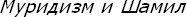

Göze çarpan bir gerçek: Türkiye'deki Türkoloji ile, Sovyetler Birliği'ndeki Türk halklar Türkologları arasındaki ilgi alanı ve yöntem bakımından var olan farklılıktır. Bu durumu sadece farklı tarihî coğrafya, farklı cemiyet sistemleri ve ideolojiler ile açıklamak mümkün değildir. Türkolojinin doğuşundaki sebepler ve Türkologların münevver kişiliklerinin de bu farklılıkta önemli payları vardır.
Aslında 19. yüzyılın ikinci yarısı ve 20. yüzyıl başında, her iki grup Türkolog arasında bir müşterek taraf da görülür. Bu Türkologlar aynı zamanda siyasî düşünce ve hatta eylem adamlarıydı. Siyaset yelpazesinin hangi kanadında yer alırlarsa alsınlar, kültürel modernleşmenin ve siyasî hareketin içinde aktif üyeler olarak göze çarpıyorlardı. Şüphesiz bizim buradaki amacımız bu geniş Türkologlar grubunun siyasî fikir ve hareketlerini incelemek değildir.
Burada, Rusya periferisindeki ve Türkiye'deki Türkologların ilk kuşağının kariyerlerindeki farklı çıkış noktalarını tespit etmek istiyoruz. Bunun için, 19. yüzyıl sonunda ve 20. yüzyıl başlarında Osmanlı ülkesindeki ve Çarlık Rusyası'ndaki modern Türkolojiyi başlatan bilim adamlarının hayat hikâyelerini ve akademik faaliyetlerini incelemek uygun bir yol olabilir. Bazı öncü Türkologların kişiliklerine değinmek niyetindeyiz.
Maalesef Türkolojinin zayıf taraflarından biri, bu ilme hizmet edenlerin sağlıklı ve etraflı araştırmaya dayanan biyografilerinin olmamasıdır. Yani, Türkoloji kendi tarihini iyi bilmeyen bir ilmî sahadır. Ne Alman ne İngiliz ve Fransız ve hele ne de Türk ve Sovyet Türkologlarının akademik faaliyet ve katkılarının kusursuzca kaydedildiği biyografik bir corpus'a sahibiz.[204] Özellikle son devir Osmanlı münevverleri ve Rusya periferisindeki Türkî düşünür ve Türkologların biyografileri açısından bu noksan daha fazla hissedilir (son zamanlardaki umut verici birkaç çalışmanın devam etmesi temenni edilir). Bu Türkologların eğitimleri, ilk tanıştıkları kaynaklar, ilk öğretmenleri veya rehber çevreleri hakkında çok defa bölük pörçük ve söylentilere dayanan bilgilerle yetinmek zorundayız. Meselâ, Azerbaycanlı Türkolog Mirza Kâzım Bey ve Şemseddin Sami (Fraşeri) ile, Ahmed Vefik Paşa ve Mirza Fethali Ahundov üzerinde bir karşılaştırma yapmaya kalksak, eldeki malûmatın yetersizliği ve sağlıksızlığı görülür. 1920'lerin dünyasında akademik Türkolojiyi, Türkiye ve Sovyet Azerbaycanı'nda teşkilâtlandıran iki şahsiyeti, Fuad Köprülü ve Bekir Çobanzade'yi ele alınca bu noksan daha da şiddetlenir. Türkiye ve Sovyet Türkoloji grubunun karşılaştığı 1926 Bakû Türkoloji Kongresi için, Theodor Menzel'in notlarından başka hatıra ve dedikodu olarak bile fazla bir bilgiye sahip değiliz.[205] (Köprülü'nün matbûattaki notlarını burada zikre değmez diye nitelemek haksızlık sayılmamalıdır). Fakat gerek bu iki ülkedeki öncü Türkologların kariyerleri ve gerekse bunların karşılaştıkları ikinci bir alan olan 1920'ler ve 1930'lar Türkiye'sindeki Türkoloji çalışmaları üzerinde bazı bilgilere sahibiz. Bunların da gene esaslı Türkoloji tarihi tetkikleri değil, söylentiler halinde bilgiler olduğu ve yaşayan insanların hatırasına dayandıklarını belirtmek gerekir.
Rusya Türkolojisinin başlangıcında, Türkî gruptan Türkologlara rastlamak mümkündür. Mehmed Ali Mirza Kâzım Bey (1802-1870), Astrahan'da İngilizce öğrenmiş muhtemelen Bible Society misyonerlerinin etkisiyle Alexandre adını almış ve Protestan olmuştur. 1826'da Kazan Üniversitesi'nde Şark dilleri lektörüdür.[206] Bu yıllarda Rusya Türkolojisi henüz kurumlaşmış değildi. Nitekim çok sonraları bile, Kasım 1852'de St. Petersburg Şark Dilleri Okulu'na Türkçe okutmak için Bâbıâlî'den öğretmen isteniyordu. Vehbi Bey o tarihlerde Rusya'ya gönderilen lektörlerdendi.[207]
Kâzım Bey'in 1839'da yazdığı,
Türk-Tatar Dili Grameri adlı eseri kısa zaman sonra 1840'ta, T. Zenker tarafından Almancaya çevrildi ve Leipzig'de basıldı (Allgemeine Grammatik der Türkisch-Tatarischen Sprache). Bu kitap Fransız Jaubert'in eseri esas alınarak yazılmış ve geliştirilmiştir. Dolayısıyla Klaus Kreiser'in ironik bir takdimiyle kaşımızda, Fransız-Azerbaycan-Rus-Saksonya ortak yapımı bir Türkolojiye giriş eseri vardır.[208] (Jaubert'in kitabını Rusçaya Kâzım Bey'in talebesi Berezin çevirmişti.) Bununla birlikte Kâzım Bey, Derbendnameh or the history of Derbend (St. Petersburg, 1856) başlıklı Kafkas tarihi,

St. Petersburg, 1865 gibi İslâm mezhepleri ve hareketleri ile ilgili ciddi tetkikleri yanında, bir Kırım tarihini Asebu's-Seyyar'ın üzerine bina etmiştir.
(Kazan, 1832),
(1835) gibi eserleri vardır.[209] Kâzım Bey'in özgün ve öncü yanı, sonraki Türk Türkologlarda (Çobanzâde hariç) görülmeyecek bir biçimde Slavistik alanındaki ilgi ve bilgisidir. Bu ona mukayeseli filoloji yapma imkânını kazandırmış görünüyor.
Kâzım Bey'in Rus ve Slav filolojisi ve Batı dilleri üzerindeki gramer bilgisi, onun bu gibi çalışmalarında göze çarpar. Dolayısıyla Osmanlı İmparatorluğu'nda kendisiyle yegâne mukayese edilebilecek iki adam, Şemseddin Sami ve Ahmed Vefik Paşa'ya göre tartışmasız bir profesyonel olduğu söylenebilir. 19. yüzyıl Türkiye Türkolojisinin en kayda değer adamı olan Arnavut ve Albanalog Şemseddin Sami, aslında modern Yunan gimnazyumunda yetişen ve Batı dünyasına mükemmel Fransızcası sayesinde açılan, ama akademik eğitiminde çok otodidakt yetişen bir kişiliktir. O dönemin Balkanlar'ındaki çoğunluk Osmanlı memurları gibi, bölgedeki 3-4 dili bilirdi. Bu bilgisi araştırma ile daha da gelişmişti. Türk ve Arnavut dilindeki gramer ve halen geçerliliğini koruyan lûgat çalışmaları dışında, roman ve tiyatro dalında da acemi fakat öncü bir muharrirdir. Uzman bir Türkolog olmaktan çok, ansiklopedik bir aydın ve kültürel modernleşme asrının öncülerindendir. Gene Avrupa ve Türkiye'de yetişen, İngilizce, Fransızca, eski ve yeni Yunanca ve Farsçayı iyi bilen Ahmed Vefik Paşa'da da aynı nitelik görülür. Bu kimseler, aslında filolojik yönden akademik bir eğitim ve araştırma öğreniminden geçmeyen, doğuş özellikleri veya kendi yönelimleriyle aydın muhitlerde yetişen kimselerdir. Uzmanlıktan çok ansiklopedisyen niteliktedirler. Osmanlı Türkolojisi, akademik kurumlarda değil, edebî ve siyasî muhitlerde doğmuştur.
Fakat Rusya periferisinin Müslüman aydınları, edip ve kültürel reformatörler Rusya periferisinde, Rus dili ve Rus eğitimi sayesinde Alman ve Fransız dilleri ve edebiyatıyla Osmanlı aydınlarına göre daha yakından ilgilenebilmişlerdir. İmlâ sorunlarına eğilen iki reformatörde, Azerî M. F. Ahundov ve Osmanlı (sonraki Maarif Nazırı) Münif Paşa'da bu farkı görmek mümkündür. 19. yüzyılın Rusyalı Müslüman münevveri, Batı Avrupa kültürü ile daha çeşitli kanallar ve diller aracılığıyla ilgi kurabiliyordu. Münif Paşa'nın çevresinde sivrilmesinde, Almanya'da gördüğü belki kayıtlı olmasa da, bir eğitim ve tetkik ve bu dilin arkasındaki yöntem tanışıklığının payı vardır. Münif Paşa, asrının Şark ve Garb'a yakın aydınıdır. Fakat üç dilde yazıp düşünebilen Ahundov'un durumu ve birikimini başkalarında da görmek mümkünken, Münif Paşa Türkiye'de nadir istisnalardandır.
1920'lerin Türk asıllı Sovyet Türkologları bu nedenle, artlarındaki Rusya kültür çevresinin getirdiği bir gelenek ve birikime sahiplerdi. Bekir Çobanzade ile Fuad Köprülü arasında yapılacak bir mukayese bunu gösterir. Aslında her ikisi de farklı kanatlarda da olsa, siyasetten uzak değildir. Her ikisi de şiirle hayata girmişti ve toplumlarındaki Kulturkampf'ın üyeleriydiler.
Bekir Çobanzade, 1893-94'te doğmuş olmalıdır (Kırım, Karasubazar). 1909'da İstanbul Sultanîsi'nde okumuş, ardından Odesa'da Slav Dilleri Yüksek Okulu'na girmiştir. 1915'te bu okuldayken askere alınıyor ve esir düşüyor. Osmanlı'nın müttefik oluşu yüzünden, Avusturya-Macaristan'da Rusya Türkü Müslüman esirlere gösterilen toleranstan olacak, Macaristan'da harb içinde okuma imkânı bulmuştur. Lorand Eötvösz Koleji gibi seçkin bir kurum ve ardından Budapeşte Üniversitesi'nde Türkolojiye devam ediyor. Bu yıllarda arkadaş olduğu Lazslo Rasonyi onun Slav dillerine hâkim olduğunu, bu nedenle filoloji ve gramer konularında sıkıntı çekmediğini, Macarcası yeterli değilken Fransızcayla mükemmel anlaştığını naklediyor. Talebeyken Codex Cumanicus'la çok ilgileniyormuş. Rasonyi başka bir ilgisinden daha bahsediyor: Siyaset... Macar Sovyet Cumhuriyeti ileri gelenleriyle temastaymış ve Béla Kun'la dost olmuş. Kısa süren Sovyet Cumhuriyeti devrinde Béla Kun'un yanında Doğulu proletaryaya hitap eden Şark adlı bir gazetenin redaktörlüğünü üstlendiği söyleniyor. 1919 içinde doktorasını tamamlamış ve Türkiye'ye, oradan da Rusya'ya dönmüş.[210] Ünlü Internationale marşının güftesini Tatarcaya bu yıllarda çevirmiş olmalıdır:
Tepren uyan xorlanıp Kelğen
Esirler açlar tünyası
Tüşmandan öc alsıntökülğen
Öksüzler tullar közyaşı
Bununla beraber Çobanzade'nin umumiyetle proleter enternasyonalizminden çok, nasyonalist bir nesle hitap eden şiirler yazdığını belirtmek gerekir. Rusya'daki Türkî intelligentsia bu dönemde Türkçülük ile Marksizmi birlikte yaşayan ve işleyen bir politik tutuma sahipti. Kırım'da Tavridya Üniversitesi'ndeki Tatar dili ve edebiyatı profesörlüğünden, 1924'te Bakû'deki Türkoloji bölümünün başına geçtiğini görüyoruz. Bakû'ye göçün nedeni için bir gönül macerası diyenler var. Aslında bu göçün nedeni pek bilinmiyor. Ama Çobanzade artık Bakû'nün ve umumî Türkoloji'nin adamıdır. Çobanzade'nin edebî ve filolojik faaliyeti de bu dönemde etkisini artırmaktadır. Onun Türk-Tatar dilleri üzerindeki gramer araştırmaları, bu dönemde Türkî Sovyet Türkologları arasında öncü durumdadır. Siyasî ve edebî kişiliği, onun bu araştırmalarında aynı zamanda bir Kulturkampf ideologu üslûbu kullanmasının da nedenidir. Türk dillerinin arınmasını, düzgün bir imlâ için harflerin Latinizasyonunu savunmaktadır. Çobanzade edebî dilin inkişafı için arınmayı ve arkaik deyişlerin kullanılmasını öneriyor. Bu önerisi için en uygun lehçe olarak Kumukçayı görmektedir.[211] 1926 yılında Kumuk dili ve edebiyatı üzerine tetkikleri yayımlanmıştır.
1930'larda dil devrimi sırasında, Türkiye'deki dilci çevrelerde de Kumukçaya önem verilmesi ve yeni kelimelerin Kumukçadan taranması bir tesadüf değildir. Çobanzade; Hüseyin Cahid, Ahmed Cevad gibi gramer üzerine yazanları tenkit etmektedir. Ona göre, Türk-Tatar dillerinde fonetik yapı, yani sesliler üzerinde durulmadan ve fiillerin ek ve kök yapısı incelenmeden bir gramer yazımı mümkün değildir ve yazılı dil inkişaf edemez. Ünlü W. Bartold'la mübarezesi burada başlar: "Etnografik tetkikat dil karşılaştırması ile yapılmazsa, hiçbir netice alınamaz."[212] Çobanzade artık kendi Kırım-Tatar lehçesini bırakmıştır; Azerbaycan muhitindedir. Bu dönemde Azerbaycan kimlik olarak henüz Türk ve Türkçeyi kullanıyor. Azerî, Azerbaycanca gibi deyimler sonrasına ait. Çobanzade umumî Türkçe, umum Türkçe edebî dil savunucularının başındadır. Bunu, sonra siyaseten ağır ödeyecektir. Çobanzade'nin bu dönemde edebî tenkit alanındaki yazdıkları da etkili olmuştu. Benim göremediğim (Azerî edebijjetinin jeni devri) adlı eseri epey etkili olmalı ki, kendisinin gözden düştüğü 1932'lerdeki temizleme döneminde, partinin militan yazarları bu eseri ve Çobanzade'nin görüşlerini tenkit etmişlerdir. Örneğin H. Mehdi, "Yazar Sanlı ve Profesör Çobanzade'nin ülkenin tarihinde ve edebiyatta sınıf çatışmasını yok farz ettiklerini" ileri sürer ve onların bu tutumunun kabul edilemeyeceğini belirtir.[213] Zaten bu yıllarda da Çobanzade'nin akademik, edebî faaliyeti sona ermiş ve kendisi ortadan kaybolmuştur. Taşkent'te olduğu söylenen notlarının ve muhallefatının tetkiki gerekmektedir.
Türkiye Türkolojisinin, daha doğrusu tarihçiliğin öncüsü sayılan Fuad Köprülü ise, Çobanzade'nin aksine, ömründe Avrupa'ya sadece kendisine verilen honoris causa doktora payesini almak için çıkmış, tamamen İstanbul muhitinde yetişmiş bir kişidir. Köprülü'nün filolojik değil, edebiyata, tarihçiliğe ve sosyolojiye yönelik bir eğitimi vardır. Durkheim, F. Tönnies ve L. Febvre'i, döneminin birçok aydınını tanıdığı belirtiliyor. Bunları muhtemelen direkt okumalar kadar, II. Meşrutiyet öncesi ve sonrasında âdet olduğu gibi, gruplarda yabancı dilleri bilip okuyanların verdiği takrir ve anlatımlarla kavramış olmalıdır. Fuad Köprülü'deki küçümsenemeyecek sosyoloji şuuru, Ziya Gökalp ve çevresindekilerin bir eseri olmalıdır. O zaten, Gökalp'i muazzam bilgili bir ansiklopedisyen diye tanımlar ve Fichte'ye benzetmekte hiç tereddüt etmez.[214]
Malûmdur ki, Köprülü seviyesiz bir eğitim veren hukuk mektebini terk etmiştir. Yani yüksek tahsili yoktur. Ama II. Meşrutiyet münevverlerinin önemli bir eğitim merkezi olan Meran İdadîsi'nde yetişti. Hüseyin Cahid burada müdürdü. Okulun mezunları arasında Ali Nihat (Tarlan), Emin (Erişirgil), Sıddık Sami (Onar) bilinen isimlerdendir. Fuad Köprülüzade burada bir tarihçi olarak yetişmiştir. Nitekim okulun kendisinden beş altı yıl sonraki Avrupa tarihi imtihan suallerine bir göz atmakta fayda vardır (bu sorular merhum Dr. Tevfik Samurçay'dan alındı, kendisi o sınıftan çok fazla genç değildi):
1) Napoléon'un hayat-ı hususîyesi, idbârına ve ikbâline sebep nedir? Waterloo'daki sûret-i ufûlü hakkında tenkîd-i tarihî ve malûmat-ı tarihî.
2) Viyana Düvel Kongresi, Metternich ve Talleirand'ın siyaseti ve Türkiye ve İngiltere'nin tarz-ı telâkkisi hakkında tenkîd-i tarihî ve malûmat-ı tarihî.
3) 1848 İhtilâl-ı İctimâiyyesinde Sosyalist ve Komünistlerin yapmak istedikleri inkîlab-ı ictimâînin mahiyyeti hakkında tenkîd-i tarihî ve malûmat-ı tarihî...
Aslında ilerdeki parlak tarihçinin sağlam tarih metodu ve düşüncesi edinmek babında küçümsenmeyecek bir eğitim ve çevreden geçtiği anlaşılıyor. Mercan İdadîsi siyasetle de uğraşılan bir yerdi. II. Meşrutiyet'in ilânında meclisin önüne talebenin toplanıp miting yaptığı, gazeteci Ahmed Samim'in öldürülmesinde talebenin gösterilerine katıldıkları biliniyor.[215] Bu dönemde Darü'l-fünûn gibi Osmanlı yüksek eğitim müesseseleri, beşerî bilimler (Geisteswissenschaft) alanında bazı liselerden (idadî) daha düşük bir eğitim veriyordu. Türkiye tarihçileri içinde Köprülü derecesinde edebî üslûb sahibi olan yoktur. Geniş kitap bilgisi ve tarih bilgisinin filolojik bir metotla temellendirilmediği ise açıktır. Edebiyat tarihine ve tarihçiliğe yönelmesi, tenkitli basımlardan çekinmesi bu yüzdendir. Genellikle Batı neşriyatını da (Almanca, Rusça, Macarca gibi) Türkiyat Enstitüsü'ndeki asistanların tercümesi sayesinde takip etmekteymiş. 1913'te 23 yaşında Darü'l-fünûn profesörü olmuştu. Bu parlak muhakemeli tarihçinin, filolojik bilgi noksanı bazı alanlarda kısıtlı düşünmesinin de nedenidir. Örneğin, "Bizans Müesseselerinin Osmanlı Müesseselerine Tesiri" üzerine yazdığı makale böyle bir noksanı gösterir[216] ve Türkiye'deki çağdaş tarihçilik üzerinde yanlış bir eğilim de yaratmıştır. Gramer ve fonetik üzerinde ciddi bir biçimde durmadığı için, başlangıçta harf devrimine de karşı çıkmıştır. Karşı çıkışı filolojik mülâhazalara dayanmıyordu. Köprülü okulunun bu noksanı, yani filolojik metotta zayıflık, kısmen Rusya'dan gelen genç Türkologlar, kısmen de 1933'ten sonra Süssheim, (1940 yılı olmalı) Ritter gibi Alman akademik göçüyle telâfi edilebilmiştir.
Rusya'da yetişen Türkî halklar Türkologlarıyla Türkiye Türkolojisi 1920'lerde, İÜEF'de karşılaştı. Gelen Rusyalılar genç bilim kadrolarıydı. Raşid Rahmeti (Arat), Zeki Velidi (Togan), Abdülkadir (İnan) bu gruptandır. Rus eğitiminin ve Ekim İhtilâli sonrası Orta Avrupa'da geçen yıllarda edinilen Alman eğitiminin kazandırdığı uzmanlık, bu gençleri Köprülü'nün vazgeçilmez yardımcıları haline getirdi. Aslında 1930'larda, dil devriminin ilk zamanlarında da bu genç kadro müşavirlik yapmıştır. Bu grubun filolojik yöntem, özellikle de Orta Asya tarihi, edebiyatı ve dilleri alanındaki bilgisinin, İstanbul grubu üzerinde ne gibi bir tesiri oldu? Bunu tespit etmek güçtür. Fakat göze çarpan ilk etki biraz grotesk niteliktedir. Muhtemelen Rahmeti Bey'in, Fitrat Bey'den çevirip, (Ungarische Jahrbücher'de) verdiği Kutadgu Bilig üzerine bir makale, Fuad Köprülü'nün edebiyat tarihinde hemen bütün sistematiği ile mehaz zikredilmeden kullanılmıştır.[217] Çağatay tetkikleri aslında bu gibi zorunlu tanışmalar dışında uzun zaman mülteci Türkolojinin tekelinde kalmıştır.
1926 Bakû Türkoloji Kongresi, Sovyetlerin Türkî Türkologları ile Türkiye Türkolojisinin karşılaştığı diğer bir alandır. Türkçe konuşan millet grubundan Sovyet Türkologlarının, bu sırada geçirilen yazının Latinizasyonu deneyi dolayısıyla, bu konuyu ana tartışma konularından biri haline getirdiği görülüyor. Bu Türkologların Türk dilinin fonetiğini bu açıdan geniş tartışmaya açtıkları Menzel'in raporundan anlaşılıyor. Aynı rapora göre, orada olan Köprülü'nün tartışmalarda pek yer almadığı görülüyor. Bu kongrede Sovyet Türk kavimleri Türkologlarının bir kısmı umumî bir Türkçeden söz ettikleri halde, bir grup da bugünkü tasnife göre, ayrı diller esasından soruna bakmışlardı. Kongrede Latinizasyon aleyhtarı bir grup da vardı.
Bugünkü Türkiye Türkolojisi ve eski Sovyet Türk halkları Türkolojisinin müşterek zayıf bir tarafına değinerek, konuyu kapatmak istiyorum. Türkiye Türkologları, Batı dilleri alanında temel bir filolojik eğitim görmemişlerdir. Bu klasik filoloji kadar modern dil dallarını da kapsar. Batı dillerini sadece yabancı eserleri tanıyacak ve konuşup anlaşacak dil olarak bilirler. Mukayeseli dilbilim için, Germanist, Slavist, Romanist vs. olan yoktur. Ahmet Ateş gibi İranist hocalarımız, Lugal gibi Semitistlerimiz Allah'ın rahmetine kavuştular. Aynı şekilde filolojik araç noksanlığı Sovyet Doğu halklarının Türkologları için de söz konusudur. Hatta bunlar Rusçayı da dil olarak bilmekte, ama aralarında sözü geçen bir Slavist olmadığı görülmektedir. Bu, ihtilâl sonrasının bir olumsuz gelişmesidir. 1930'ların temizliğinden sonra Batı dili öğrenen çıkmadı. Klasik filoloji dalındaki eğitimsizlik ise, Türk dünyası Türkologlarının mukayeseli metotla çalışabilmelerini ve yaratıcılıklarını büyük ölçüde engelleyen bir noksandır. Maalesef her iki dünyada da Türkologlar, dar yerel kültürün içine kapalı uzmanlar olarak kalmak durumundadır. Bunun şiddetle telâfisi gerekir. Aksi takdirde Türkoloji Türklerin söz sahibi olduğu bir şube olamaz.